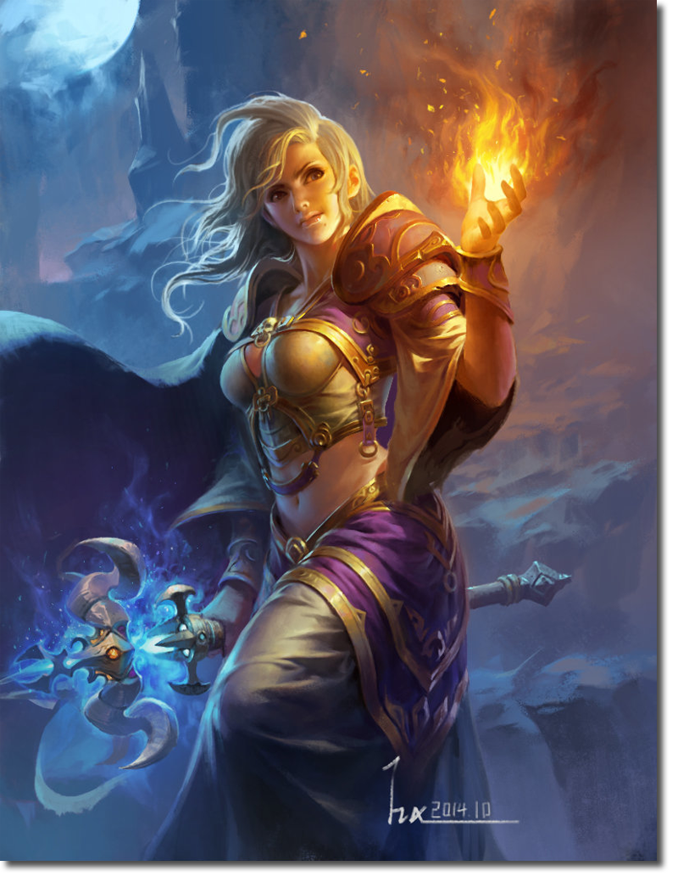
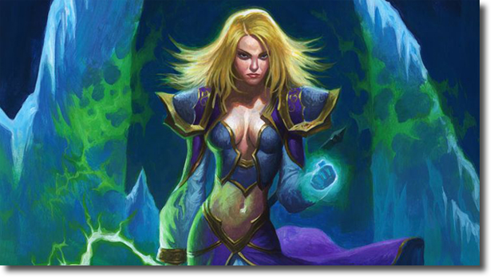
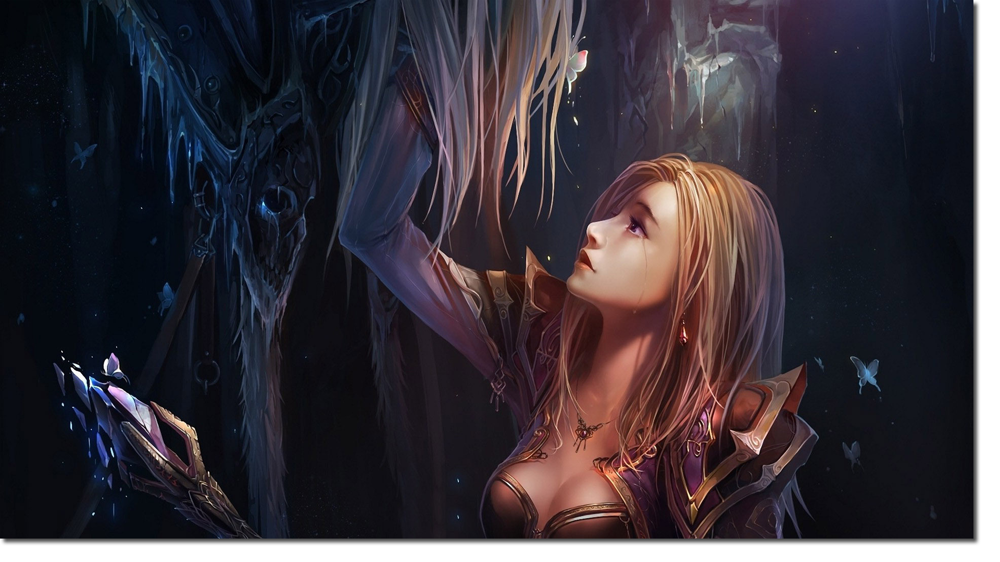
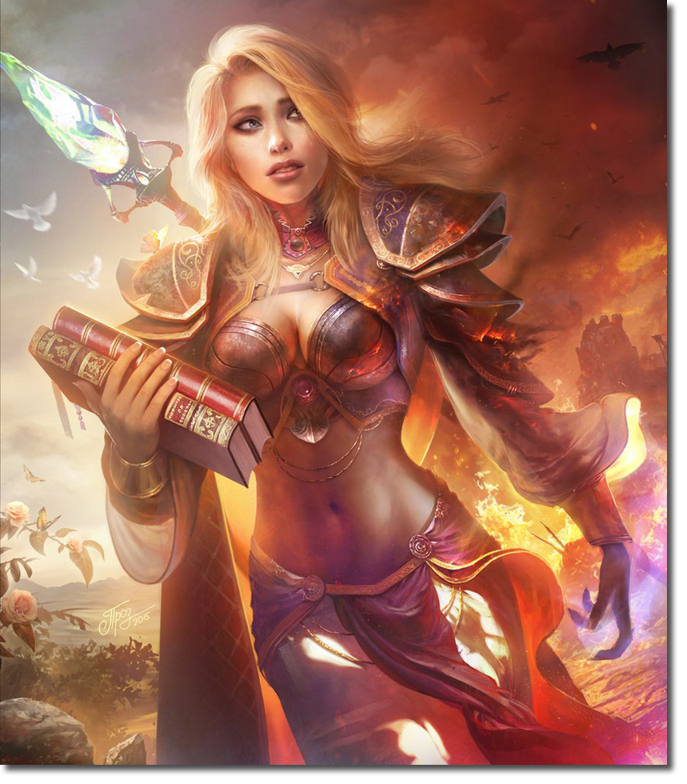

Guides
 Future contained a much more all for Jaina Proudmoore. After a couple of days when she wandered through Stratholme and tried to help that made Arthas and his men, she was approached by a strange man, the prophet, who had previously tried to talk c Antonidas, but he did not listen. Take them, he said to her, take the ones you can save, and taken away to another kingdom to the other side of the sea to Kalimdor. She did what Terenas Antonidas and could not - she listened to and found meaning in the words of the prophet. Lordaeron falling apart right around it, the plague had no medicines, and the least she could do - is to save those who have not yet died. In Kalimdor, Jaina finally met Thrall, the new leader of the Horde and saw with their own eyes what is actually these strangers orcs. Despite the lack of confidence in the beginning of the relationship, Jaina, Thrall, and the night elves worked together until the end of the Third War. This strange prophet who sent her to Kalimdor was none other like Medivh - the son of the woman, Jaina idealized from an early age, with a master force beyond comprehension. Third War for Jains was not only the war, but in fact, it was the beginning of her freedom. Throughout his life, it was limited to formalities, position in society, the people around her, regulations and perhaps even views his father. In Kalimdor she got full control over their own destiny, and because of this it has become even more shine. But the plans of the Burning Legion were stopped and brought to the Jaina question: what do you do next? The only answer she could give to this question was "Diplomacy".

Jaina believed in the good world and thought that the beings who live in this world, were inherently good. She was not going to deviate from his beliefs, even when her family objected to them. She wanted the best for the whole world - a world of peace which would have made even closer allies, and the threat of the Burning Legion void. Her father, in turn, did not share its views, and once again it proved when he went to Kalimdor ruthlessly kill all the orcs, which just saw.
Orcs allowed Jaina to kill him. At that moment she realized that she has a choice: to try to save a man who was determined to make the world burn in the fire, or to turn away. Just as in the case of Arthas, Jaina turned and Admiral Proudmoore has ceased to exist. In both cases, the man she loved had been on the road obsession that led them only to darkness. In the end, the world will be as good as you wish. And when you want to opponents of death, only death and overtake you. Jaina Proudmoore, never indulge in optimism, I wanted to break this rule.
It was a practical solution. It was a decision scientist, researcher, someone who can remove their emotions and make the right choice. This choice will haunt her the rest of her life, just like Arthas continued to follow in her footsteps, even when his brain has eaten the Lich King, and he announced his presence in Northrend. It is practical and convenient to leave the past in the past, but it is actually much more difficult to do when the past is hunting for you.
When darkness has fallen
Jaina was strong, like her who are not pacing. Other people would long ago have broken, if faced with the horrors that followed it. For example the ghost of the man she loved, and who have long been dead. Arthas was dead, was alive only the Lich King, but Jaina with her eternally optimistic was sure that it somehow can be returned. She believed that somewhere deep inside still remained the old Arthas. What the man she loved, was still alive. When she realized the truth, it was a heavy blow.
And it was followed by the next blow. Shortly after defeating the Lich King Cataclysm Azeroth ripped by burning the whole location and precious resources. Jaina put more effort into the diplomatic sphere, to deter conflict between the Horde and the Alliance, but it was useless when Thrall, the orc, she could definitely be called a friend, resigned as leader of the Horde and left in its place Garrosh Hellscream.

Hellscream absolutely no interest in diplomacy and his efforts as a new leader is attached to racial hatred even within the Horde. The emergence of Bane Bloodhoof in Theramore after the death of his father telling.
And yet, for a long time, Thrall said nothing and did nothing, staying busy saving the world. In understanding the Jains, she fought all her life for a better future for the world.
However, Theramore fell. It was destroyed, flooding everything with blood, and all this blood was, clear as day, at the hands of Hellscream. At the time, the patience finally snapped Jaina and Orgrimmar was nearly drowned under water, from its spell, which do not apply only gave her Kalecgos, recalling what she really fights. On that day, optimistic, idealistic Jaina, a woman who fought for a bright future, has disappeared as well as her hair with a golden tint, which have become white.
Plans for future
Jaina finally realized that all her optimistic attitude will not change the fate of its people. As the fate of the Alliance. This attitude could not get Thrall turn and look at what makes Hellscream, as he could not bring Garrosh stop attack on Theramore. Where there were once people, respectable people who are a little different from it, were now the beasts, wild and blood-thirsty, just like her father said.
Her father, whom she allowed to devour these animals that are eventually killed and her friends, leaving the city only dust Arcane and a huge crater. At the spot where recently laughing children and the adults talked about the bright future for them.
After the destruction of Theramore Jaina had fallen on the shoulders of the leadership of the Kirin Tor. Her candidacy suggested Khadgar. And like last time, when her heart was broken Arthas, she did something that was - she immersed herself in research and scientific work. As a leader, she immediately began to closely monitor those who have been associated with the Horde, throwing them from his firm hand. She knew that they were in some way responsible for what he did Garrosh Hellscream.
Perhaps the word Tazhan Zhu on the Island Thunder temporarily stopped her. But the idea of cessation of the vicious circle of hatred, she was not going to give up. She believed that it should stop after they kill Garrosh during the Siege of Orgrimmar. After all, if there was someone in charge of it all, it was Garrosh. If there was a faction that was responsible for what he did, it was the Horde. Having broken the Horde, the circle can be broken.
The vicious cycle of hatred
Jaina was deprived of the opportunity in advance to see what happens. In the novel, War crimes Jaina still struggling against injustice, allowing the Horde to continue to exist, allowing them to make their violent acts. At the end of the novel, it seems, finally aware of everything. And in many ways it can thank for this letter from the leader Vol'jin.
Jaina Proudmoore - a woman who has spent his whole life chasing an incredible dream, a bright and peaceful future. During his life, she learned to find this strange, dark thing that feeds itself. For the first time she saw it in Arthas - fed up dark darkness, which eventually led to self-destruction. Later, she saw it as a father - the inability to see nothing but hatred in these strange people with green skin and the failure to consider them as anything else but to animals, condemned to death. She saw it and Garrosh Hellscream - its failure to take a different result, but to complete the conquest.
"To understand what happened in Dalaran, it took me a while. You have been a woman of the world, but the more you it's not. Garrosh scorches the earth, and the dead - not the only victim. From me you will not live to see any hate or judgment, it does not matter how you relate to or Garrosh Horde. We all have our skeletons in the closet.
To the dismay of Jains, she began to notice this thing before seen in Arthas, her father and Garrosh, now in his mirror. Every morning.

World gladly return to you what you gave him earlier. Jaina never wanted to live in a world of hatred. Vol'jin could not blame her, and hated her for her beliefs, he just knew they wanted her to know that he, too, wants to break this vicious circle.
Jaina whether to trust the Horde? No. Will it once again trust them? It depends on the Horde and of their actions. As already said in the Jaina War Crimes, this is not the Horde Garrosh Hellscream - a fraction of the whole can not be judged by the actions of its leader, only one creature. But Vol'jin said in patch 5.3: "We are working together. We do not even need to be similar to each other. " If you want a horde of any diplomatic relations, they must first prove that they can be trusted. And they will have to do it for the leader of the Kirin Tor, regardless of what to say Khadgar.
Now Jaina Proudmoore watching. It gives the Horde a chance to show who they really are, under the leadership of a new leader. But you can be sure that if they accept the old, if she did not like what she sees, it's over very quickly, because the world deserves better.